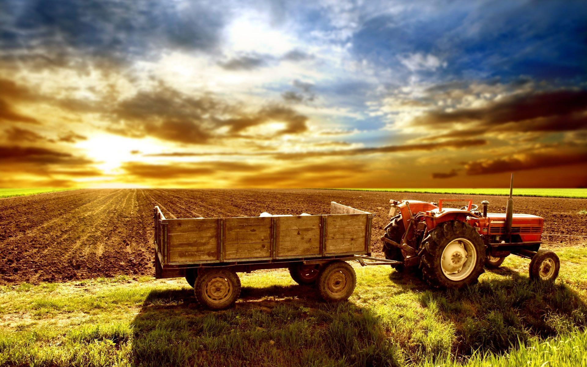

Crop prediction is a crucial aspect of modern agriculture.
It involves the use of various techniques to forecast the yield of crops, which can help in making informed decisions regarding planting,
watering, and harvesting crops

Machine Learning in Agriculture: Machine learning applications are transforming data processing methods and decision-making in agriculture1. They help optimize crop production and reduce waste1.
Crop Type Prediction: Machine learning algorithms like k-NN, SVM, RF, and GB trees are examined for crop-type prediction3. These algorithms can indicate the best crop type based on given features3.
Crop Production Prediction: Various machine learning techniques are applied to predict the yield of crops2. For instance, a study found that the Random Forest model provided maximum accuracy2.
Benefits: By analyzing wide-ranging data collected from farms, farmers can make more informed decisions about factors that affect crop growth1. This can lead to increased crop yields while minimizing waste